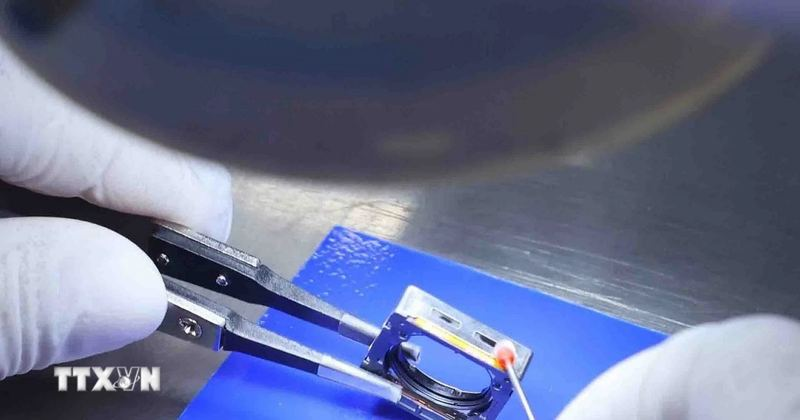

⚡GlobalFoundries đầu tư 21 tỷ USD xây dựng hai cơ sở sản xuất chip tại Mỹ
Facebook Twitter Lưu bài viết Bản in Copy link Tổng thống Mỹ Donald Trump ngày 14/10 thông báo công ty sản xuất chất bán dẫn GlobalFoundries sẽ đầu tư 21 tỷ USD để xây dựng hai cơ sở sản xuất chip quy mô lớn tại thành ph